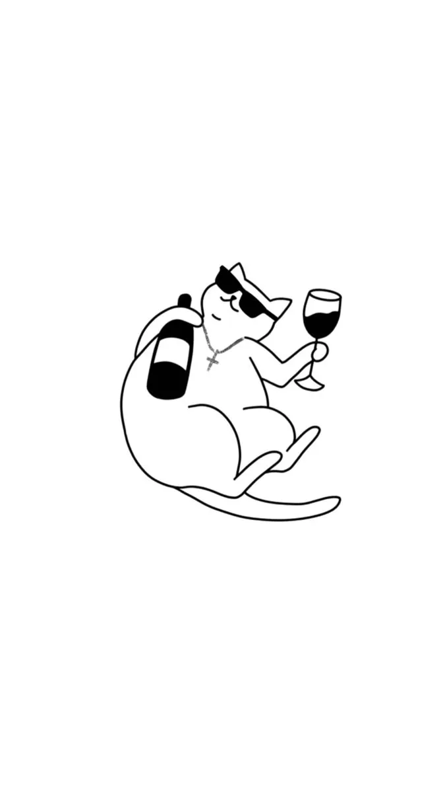

Cambia el color de fondo para pantallas grandes (mínimo 960px).
Aumentar tamaño de fuente para pantallas pequeñas (máximo 600px).
Ocultar esta barra en orientación vertical (portrait).
Mostrar esta barra de navegación solo en orientación horizontal (landscape).
- Elemento 1
- Elemento 2
- Elemento 3
Cambiar tipografía del título en pantallas pequeñas (máximo 576px)
